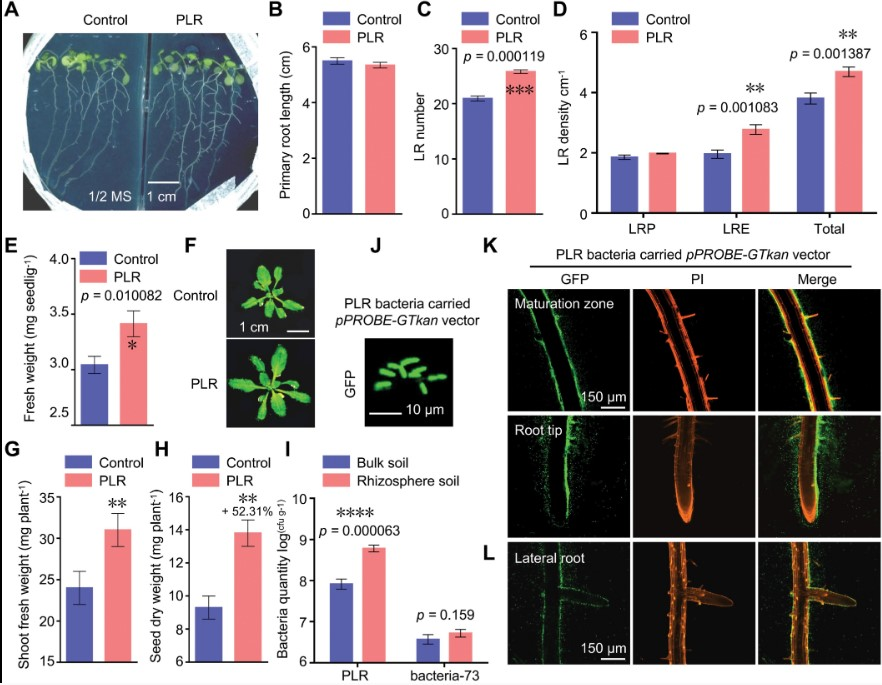
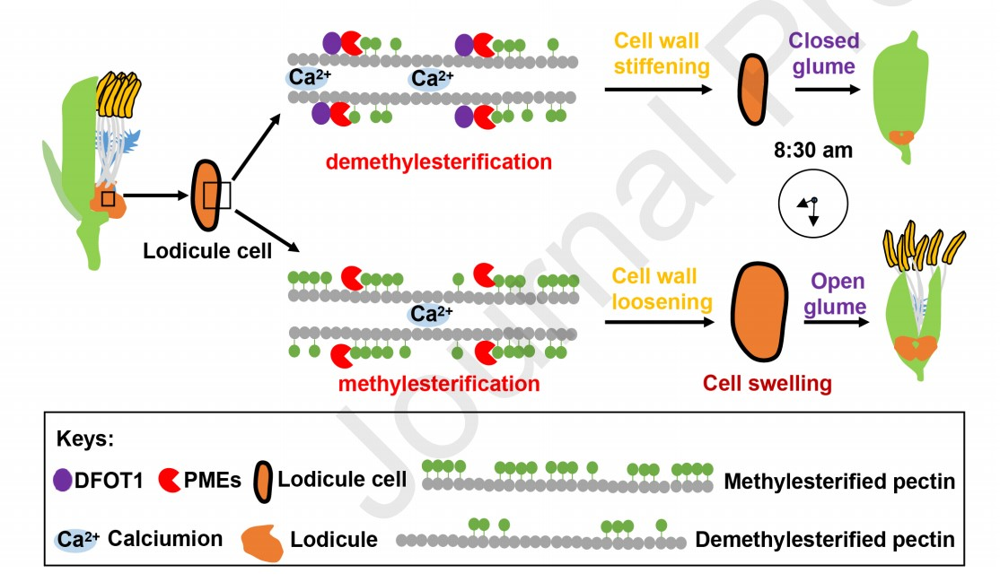
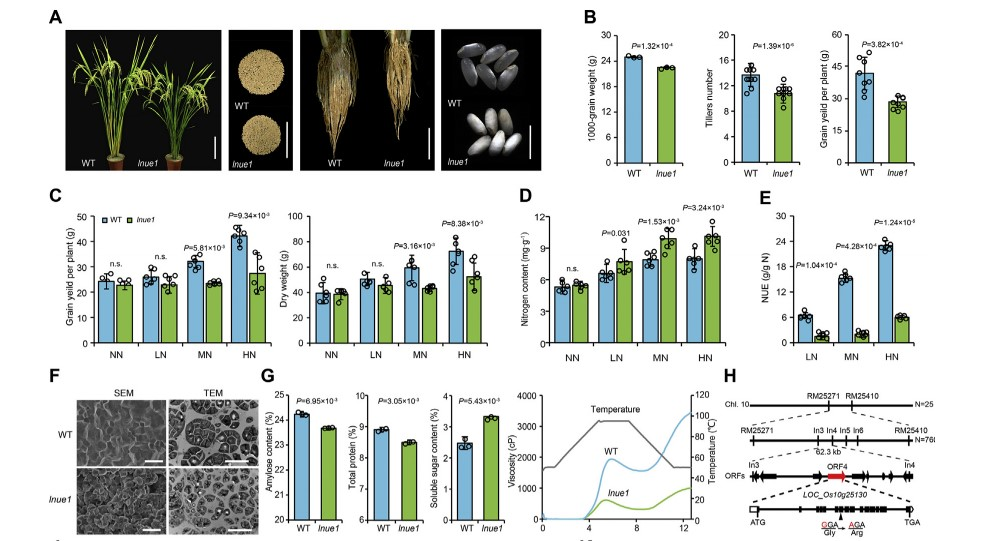

Targeting a gene regulatory element enhances rice grain yield by decoupling panicle number and size
Crop genetic improvement requires balancing complex tradeoffs caused by gene pleiotropy and linkage drags, as exemplified by IPA1 (Ideal Plant Architecture 1), a typical pleiotropic gene in rice that increases grains per panicle but reduces tillers. In this study, we identified a 54-base pair cis-regulatory region in IPA1 via a tiling-deletion-based CRISPR–Cas9 screen that, when deleted, resolves the tradeoff between grains per panicle and tiller number, leading to substantially enhanced grain yield per plant. Mechanistic studies revealed that the deleted fragment is a target site for the transcription factor An-1 to repress IPA1 expression in panicles and roots. Targeting gene regulatory regions should help dissect tradeoff effects and provide a rich source of targets for breeding complementary beneficial traits.(Nature Biotechnology)
TaCol-B5 modifies spike architecture and enhances grain yield in wheat
Spike architecture influences grain yield in wheat. We report the map-based cloning of a gene determining the number of spikelet nodes per spike in common wheat. The cloned gene is named TaCOL-B5 and encodes a CONSTANS-like protein that is orthologous to COL5 in plant species. Constitutive overexpression of the dominant TaCol-B5 allele but without the region encoding B-boxes in a common wheat cultivar increases the number of spikelet nodes per spike and produces more tillers and spikes, thereby enhancing grain yield in transgenic plants under field conditions. Allelic variation in TaCOL-B5 results in amino acid substitutions leading to differential protein phosphorylation by the protein kinase TaK4. The TaCol-B5 allele is present in emmer wheat but is rare in a global collection of modern wheat cultivars.(Science)
A nitric oxide burst at the shoot apex triggers a heat-responsive pathway in Arabidopsis
When confronted with heat stress, plants depend on the timely activation of cellular defences to survive by perceiving the rising temperature. However, how plants sense heat at the whole-plant level has remained unanswered. Here we demonstrate that shoot apical nitric oxide (NO) bursting under heat stress as a signal triggers cellular heat responses at the whole-plant level on the basis of our studies mainly using live-imaging of transgenic plants harbouring pHsfA2::LUC, micrografting, NO accumulation mutants and liquid chromatography–tandem mass spectrometry analysis in Arabidopsis. Furthermore, we validate that S-nitrosylation of the trihelix transcription factor GT-1 by S-nitrosoglutathione promotes its binding to NO-responsive elements in the HsfA2 promoter and that loss of function of GT-1 disrupts the activation of HsfA2 and heat tolerance, revealing that GT-1 is the long-sought mediator linking signal perception to the activation of cellular heat responses. These findings uncover a heat-responsive mechanism that determines the timing and execution of cellular heat responses at the whole-plant level.(Nature Plants)
Targeting a gene regulatory element enhances rice grain yield by decoupling panicle number and size
Crop genetic improvement requires balancing complex tradeoffs caused by gene pleiotropy and linkage drags, as exemplified by IPA1 (Ideal Plant Architecture 1), a typical pleiotropic gene in rice that increases grains per panicle but reduces tillers. In this study, we identified a 54-base pair cis-regulatory region in IPA1 via a tiling-deletion-based CRISPR–Cas9 screen that, when deleted, resolves the tradeoff between grains per panicle and tiller number, leading to substantially enhanced grain yield per plant. Mechanistic studies revealed that the deleted fragment is a target site for the transcription factor An-1 to repress IPA1 expression in panicles and roots. T argeting gene regulatory regions should help dissect tradeoff effects and provide a rich source of targets for breeding complementary beneficial traits. (Nature Biotechnology)
Ethylene Induced by Sound Stimulation Enhances Anthocyanin Accumulation in Grape Berry Skin through Direct Upregulation of UDP-Glucose: Flavonoid 3-O-Glucosyltransferase
Global warming has resulted in the loss of anthocyanin accumulation in berry skin. Sound stimulation can be used as a potential method for enhancing fruit color development since many plants recognize sound vibration as an external stimulus and alter their physiological status in response to it. Sound stimulation (sine wave sound at 1000 Hz) enhanced anthocyanin accumulation in grape cultured cells and berry skins in field-grown grapevines at the early stage of ripening. The transcription of UFGT and ACO2, which encode the key enzymes in anthocyanin and ethylene biosynthesis, respectively , was upregulated in grape cultured cells exposed to sound stimulation. In contrast, the transcription of MybA1 and NCED1, which encode a transcription factor for UFGT and a key enzyme in abscisic acid biosynthesis, respectively , was not affected by the sound stimulation. A treatment with an ethylene biosynthesis inhibitor, aminoethoxyvinyl glycine hydrochloride, revered the enhancement of anthocyanin accumulation by sound stimulation. As the promoter assay using a GUS reporter gene demonstrated thatUFGT promoter was directly activated by the ethylene-releasing compound ethephon, which enhanced anthocyanin accumulation in grape cultured cells, we conclude that sound stimulation enhanced anthocyanin accumulation through the direct upregulation of UFGT by ethylene biosynthesis. Our findings suggest that sound stimulation contributes to alleviating poor coloration in berry skin as a novel and innovative practical technique in viticulture.(Cells)
Serratia marcescens PLR enhances lateral root formation through supplying PLR-derived auxin and enhancing auxin biosynthesis in Arabidopsis
Plant growth promoting rhizobacteria (PGPR) refer to bacteria that colonize the rhizosphere and contribute to plant growth or stress tolerance. To further understand the molecular mechanism by which PGPR exhibit symbiosis with plants, we performed a high-throughput single colony screening from the rhizosphere, and uncovered a bacterium (named promoting lateral root, PLR) that significantly promotes Arabidopsis lateral root formation. By 16S rDNA sequencing, PLR was identified as a novel sub-species of Serratia marcescens. RNA-seq analysis of Arabidopsis integrated with phenotypic verification of auxin signalling mutants demonstrated that the promoting effect of PLR on lateral root formation is dependent on auxin signalling. Furthermore, PLR enhanced tryptophan-dependent indole-3-acetic acid (IAA) synthesis by inducing multiple auxin biosynthesis genes in Arabidopsis. Genome-wide sequencing of PLR integrated with the identification of IAA and its precursors in PLR exudates showed that tryptophan treatment significantly enhanced the ability of PLR to produce IAA and its precursors. Interestingly, PLR induced the expression of multiple nutrient (N, P, K, S) transporter genes in Arabidopsis in an auxin-independent manner. This study provides evidence of how PLR enhances plant growth through fine-tuning auxin biosynthesis and signalling in Arabidopsis, implying a potential application of PLR in crop yield improvement through accelerating root development.(Journal of Experimental Botany)

Wheat breeding history reveals synergistic selection of pleiotropic genomic sites for plant architecture and grain yield
Diversity surveys of crop germplasm are important for gaining insights into the genomic basis for plant architecture and grain yield improvement, which is still poorly understood in wheat. In this study, we exome sequenced 287 wheat accessions that were collected in the past 100 years. Population genetics analysis identified that 6.7% of the wheat genome falls within the selective sweeps between landraces and cultivars, which harbors the genes known for yield improvement. These regions were asymmetrically distributed on the A and B subgenomes with regulatory genes being favorably selected. Genome-wide association study (GWAS) identified genomic loci associated with traits for yield potential, and two underlying genes, TaARF12 encoding an auxin response factor and TaDEP1 encoding the G-protein γ-subunit, were located and characterized to pleiotropically regulate both plant height and grain weight. Elite single-nucleotide haplotypes with increased allele frequency in cultivars relative to the landraces were identified and found to have accumulated over the course of breeding. Interestingly, we found that TaARF12 and TaDEP1 function in epistasis with the classical plant height Rht-1 locus, leading to propose a “Green Revolution”-based working model for historical wheat breeding. Collectively, our study identifies selection signatures that fine-tune the gibberellin pathway during modern wheat breeding and provides a wealth of genomic diversity resources for the wheat research community.(Molecular plant)
Brassinosteroids regulate rice seed germination through the BZR1-RAmy3D transcriptional module
Seed dormancy and germination, two physiological processes unique to seed-bearing plants, are critical for plant growth and crop production. The phytohormone brassinosteroid (BR) regulates many aspects of plant growth and development, including seed germination. The molecular mechanisms underlying BR control of rice (Oryza sativa) seed germination are mostly unknown. We investigated the molecular regulatory cascade of BR in promoting rice seed germination and post-germination growth. Physiological assays indicated that blocking BR signaling, including introducing defects into the BR-insensitive 1 (BRI1) receptor or overexpressing the glycogen synthase kinase 2 (GSK2) kinase delayed seed germination and suppressed embryo growth. Our results also indicated that brassinazole-resistant 1 (BZR1) is the key downstream transcription factor that mediates BR regulation of seed germination by binding to the alpha-Amylase 3D (RAmy3D) promoter, which affects α-amylase expression and activity and the degradation of starch in the endosperm. The BZR1-RAmy3D module functions independently from the established Gibberellin MYB-alpha-amylase 1A (RAmy1A) module of the gibberellin (GA) pathway. We demonstrate that the BZR1-RAmy3D module also functions in embryo-related tissues. Moreover, RNA-sequencing (RNA-seq) analysis identified more potential BZR1-responsive genes, including those involved in starch and sucrose metabolism. Our study successfully identified the role of the BZR1-RAmy3D transcriptional module in regulating rice seed germination.(Plant Physiology)
Knockout of OsNRAMP5 enhances rice tolerance to cadmium toxicity in response to varying external cadmium concentrations via distinct mechanisms
OsNRAMP5 is a transporter responsible for cadmium (Cd) and manganese (Mn) uptake and root-to-shoot translocation of Mn in rice plants. Knockout of OsNRAMP5 is regarded as an effective approach to minimize Cd uptake and accumulation in rice. It is vital to evaluate the effects of knocking out OsNRAMP5 on Cd and Mn accumulation, as well as Cd tolerance of rice plants in response to varying environmental Cd concentrations, and to uncover the underlying mechanism, which until now, has remained largely unexplored. This study showed that knockout of OsNRAMP5 decreased Cd uptake, but simultaneously facilitated Cd translocation from roots to shoots. The effect of OsNRAMP5 knockout on reducing root Cd uptake weakened, however its effect on improving root-to-shoot Cd translocation was constant with increasing environmental Cd concentrations. As a result, its mutation dramatically reduced Cd accumulation in shoots under low and moderate Cd stress, but inversely increased that under high Cd conditions. Interestingly, Cd tolerance of its knockout mutants was persistently enhanced, irrespective of lower or higher Cd concentrations in shoots, compared with that of wild-type plants. Knockout of OsNRAMP5 mitigated Cd toxicity by dramatically diminishing Cd uptake at low or moderate external Cd concentrations. Remarkably, its knockout effectively complemented deficient mineral nutrients in shoots, thereby indirectly enhancing rice tolerance to severe Cd stress. Additionally, its mutation conferred preferential delivery of Mn to young leaves and grains. These results have important implications for the application of the OsNRAMP5 mutation in mitigating Cd toxicity and lowering the risk of excessive Cd accumulation in rice grains.(Sci Total Environ)
A dirigent family protein confers variation of Casparian strip thickness and salt tolerance in maize
Plant salt-stress response involves complex physiological processes. Previous studies have shown that some factors promote salt tolerance only under high transpiring condition, thus mediating transpiration-dependent salt tolerance (TDST). However, the mechanism underlying crop TDST remains largely unknown. Here, we report that ZmSTL1 (Salt-Tolerant Locus 1) confers natural variation of TDST in maize. ZmSTL1 encodes a dirigent protein (termed ZmESBL) localized to the Casparian strip (CS) domain. Mutants lacking ZmESBL display impaired lignin deposition at endodermal CS domain which leads to a defective CS barrier. Under salt condition, mutation of ZmESBL increases the apoplastic transport of Na+ across the endodermis, and then increases the root-to-shoot delivery of Na+ via transpiration flow, thereby leading to a transpiration-dependent salt hypersensitivity. Moreover, we show that the ortholog of ZmESBL also mediates CS development and TDST in Arabidopsis. Our study suggests that modification of CS barrier may provide an approach for developing salttolerant crops.(NATURE COMMUNICATIONS)
Methylesterification of cell wall pectin controls the diurnal flower opening times in rice
Flowers are the core reproductive organ of plants, and flowering is essential for cross-pollination. Diurnal flower opening time is thus a key trait influencing reproductive isolation, hybrid breeding and thermostability in plants. However, the molecular mechanisms governing this trait are unknown. Here, we report that rice Diurnal Flower Opening Time 1 (DFOT1) modulates pectin methylesterase (PME) activity to regulate pectin methylesterification levels of the lodicule cell walls, which affect lodicule swelling to control diurnal flower opening time. DFOT1 is specifically expressed in lodicules, and its expression gradually increases with the approach to flowering, but decreases with flowering. Importantly, a knockout of DFOT1 showed earlier diurnal flower opening. We demonstrate that DFOT1 interacts directly with multiple PMEs to promote their activity. Knockout of PME40 also resulted in early diurnal flower opening, while overexpression of PME42 delayed diurnal flower opening. Lower PME activity was associated with higher levels of pectin methylesterification and softening of cell walls in lodicules, which contributed to the absorption of water by lodicules and caused them to swell, thus promoting early diurnal flower opening. Higher PME activity had the opposite effect. How DFOT1 modulates PME activity to regulate diurnal flower opening time may be relevant in other flowering plants. Therefore, this work not only uncovers a molecular mechanism underlying the diurnal flower opening time regulation, but could also help reduce the costs of hybrid breeding and improve the heat tolerance of flowering plants by avoiding the higher temperatures at anthesis.(Molecular Plant)

Simultaneous editing of host factor gene TaPDIL5-1homoeoalleles confers wheat yellow mosaic virus resistance in hexaploid wheat
This work achieved reliable WYMV resistance in wheat with no negative effects, through knocking out a dispensable host factor gene independent of the eIF complex. Furthermore, this study demonstrates a strategy to recover recessive resistance genes against viruses in an allopolyploid species by identifying the susceptibility genes in its diploid progenitors (e.g. T. urartu, A. speltoides, and A. tauschii) or relatives (e.g. Triticum monococcum and H. vulgare), followed by manipulation of their homoeologues in transformable varieties via genome editing.(New Phytologist)
Heterotypic transcriptional condensates formed by prion-like paralogous proteins canalize flowering transition in tomato
Here, we explore the genetic relationship and protein behavior of ALOG family transcriptional factors with diverse transcriptional abundance in shoot meristems. A mutant spectrum covers single and higher-order mutant combinations of five ALOG paralogs and creates a continuum of flowering transition defects, showing gradually enhanced precocious flowering, along with inflorescence simplification from wild-type-like to progressively fewer flowers until solitary flower with sterile floral organs. Therefore, these paralogs play unequal roles and act together to achieve a robust genetic canalization. All five proteins contain prion-like intrinsically disordered regions (IDRs) and undergo phase separation. Accumulated mutations following gene duplications lead to IDR variations among ALOG paralogs, resulting in divergent phase separation and transcriptional regulation capabilities. Remarkably, they retain the ancestral abilities to assemble into a heterotypic condensate that prevents precocious activation of the floral identity gene ANANTHA.(Genome Biology)
Introgression of chromosome 1P from Agropyron cristatum reduces leaf size and plant height to improve the plant architecture of common wheat
A new direction in crop breeding is the improvement of plant architecture for dense plantings to obtain higher yields. Wild relatives carry an abundant genetic variation that can increase the diversity of genes for crop genetic improvement. In this study, the A. cristatum 1P addition line, 1PS and 1PL telosomic addition lines were obtained by backcrossing the addition/ substitution line II-3-1 (2n=20'' W+1P"+2P") with the commercial recurrent parent cv. Jimai 22. Four continuous years of agronomic trait investigation in the genetic populations suggested that the introduction of A. cristatum chromosome 1P into wheat can signifcantly improve wheat plant architecture by reducing the plant height, leaf length and leaf width. A. cristatum chromosome arm 1PS reduced the plant height and leaf length of wheat, whereas introducing A. cristatum chromosome arm 1PL reduced the plant height, leaf length and leaf width. Altogether, our results demonstrated that A. cristatum chromosome 1P carries the dominant genes for small leaves and a dwarf habit for the enhancement of plant architecture in wheat. This study highlights wild relative donors as new gene resources for improving wheat plant architecture for dense planting.(Theoretical and Applied Genetics)

TaCol-B5 modifies spike architecture and enhances grain yield in wheat
Spike architecture influences grain yield in wheat. We report the map-based cloning of a gene determining the number of spikelet nodes per spike in common wheat. The cloned gene is named TaCOL-B5 and encodes a CONSTANS-like protein that is orthologous to COL5 in plant species. Constitutive overexpression of the dominant TaCol-B5 allele but without the region encoding B-boxes in a common wheat cultivar increases the number of spikelet nodes per spike and produces more tillers and spikes, thereby enhancing grain yield in transgenic plants under field conditions. Allelic variation in TaCOL-B5 results in amino acid substitutions leading to differential protein phosphorylation by the protein kinase TaK4. The TaCol-B5 allele is present in emmer wheat but is rare in a global collection of modern wheat cultivars.(Science )
Identifcation and fine mapping of a major QTL (qRtsc8 1) conferring resistance to maize tar spot complex and validation of production markers in breeding lines
Tar spot complex (TSC) is a major foliar disease of maize in many Central and Latin American countries and leads to severe yield loss. To dissect the genetic architecture of TSC resistance, a genome-wide association study (GWAS) panel and a bi-parental doubled haploid population were used for GWAS and selective genotyping analysis, respectively. A total of 115 SNPs in bin 8.03 were detected by GWAS and three QTL in bins 6.05, 6.07, and 8.03 were detected by selective genotyping. The major QTL qRtsc8-1 located in bin 8.03 was detected by both analyses, and it explained 14.97% of the phenotypic variance. To fne map qRtsc8-1, the recombinant-derived progeny test was implemented. Recombinations in each generation were backcrossed, and the backcross progenies were genotyped with Kompetitive Allele Specifc PCR (KASP) markers and phenotyped for TSC resistance individually. The signifcant tests for comparing the TSC resistance between the two classes of progenies with and without resistant alleles were used for fne mapping. In BC5 generation, qRtsc8-1 was fne mapped in an interval of ~721 kb fanked by markers of KASP81160138 and KASP81881276. In this interval, the candidate genes GRMZM2G063511 and GRMZM2G073884 were identifed, which encode an integral membrane protein-like and a leucinerich repeat receptor-like protein kinase, respectively. Both genes are involved in maize disease resistance responses. Two production markers KASP81160138 and KASP81160155 were verifed in 471 breeding lines. This study provides valuable information for cloning the resistance gene, and it will also facilitate the routine implementation of marker-assisted selection in the breeding pipeline for improving TSC resistance.(Theoretical and Applied Genetics)
Alanine aminotransferase (OsAlaAT1) modulates nitrogen utilization, grain yield, and quality in rice
Since the widespread use of inorganic nitrogen fertilizers has greatly contributed to rice yields, but it has also caused serious environmental problems. Therefore, the identifification and study of genes involved in regulating nitrogen use effificiency (NUE) in rice is a practical way to improve grain yield and alleviate environmental problems caused by the flflood of nitrogen fertilizer. Here, we identifified a low nitrogen use effificiency rice mutant lnue1 which showed shorter plants, reduced yield traits, bad rice quality. And the NUE was signifificantly reduced; the nitrogen concentration in lnue1 tissues was higher than that of the wild-type. Map-based cloning showed that LNUE1 encode an alanine aminotransferase (OsAlaAT1). The enzymatic activity of AlaAT in lnue1 was sharply reduced. Overexpression of LNUE1 could improve rice yield potential. Altogether, our results demonstrated that LNUE1 is a key factor to regulate the NUE, then inflfluences the grains yield and the quality in rice simultaneously, and denote new insights into how to increase the rice NUE, which would be useful for genetic improvement of high yield and grain quality.(Journal of Genetics and Genomics)
